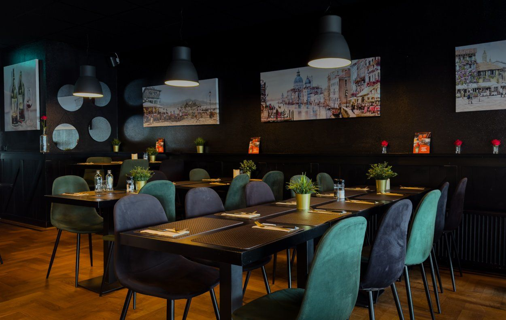
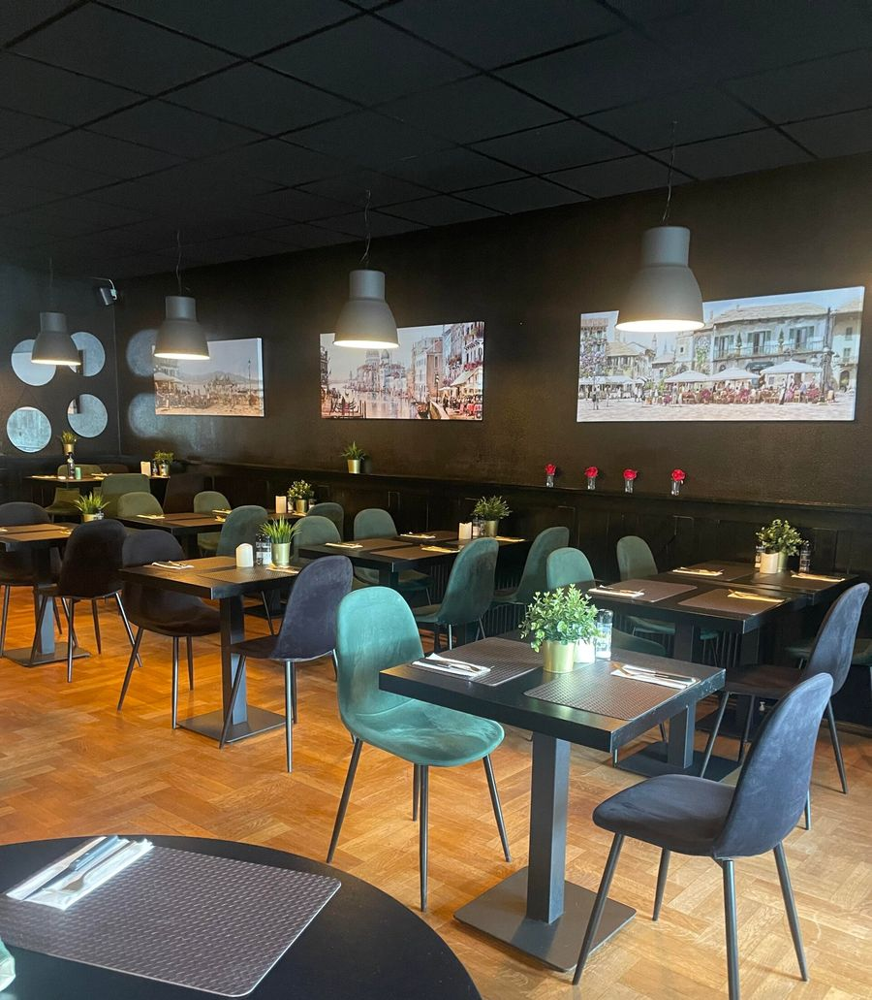
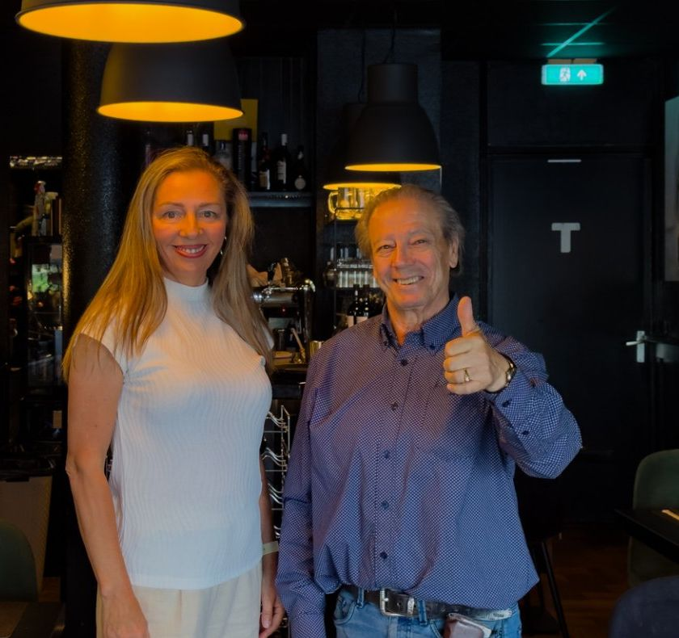
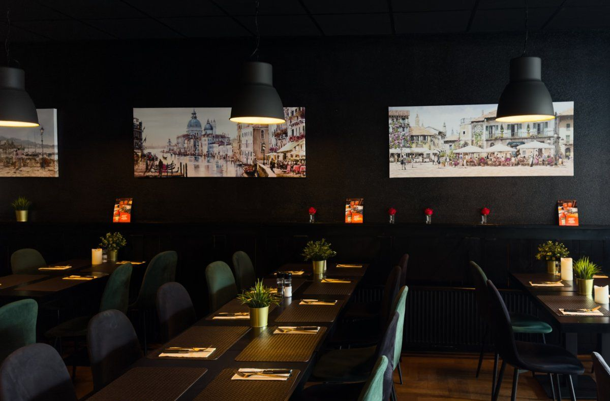
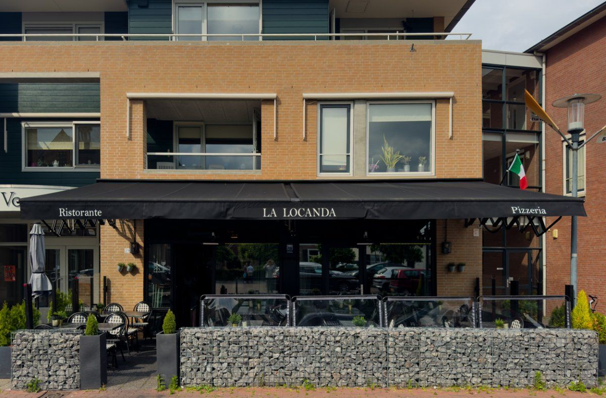
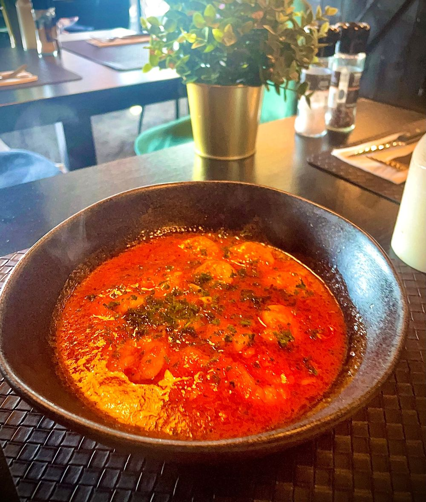

Pasta, pizza en Italiaanse klassiekers in hartje Bavel. Na bijna veertig jaar Da Attilio op de Grote Markt in Breda koken we nu voor u aan het Jack van Gilsplein.
Op en top Italiaans restaurant.De_Eik, via la-locanda.nl
Van bruschetta en vers gemaakte minestrone tot ossobuco en huisgemaakte tiramisu. Pasta's kiest u met penne of spaghetti.
Liever thuis eten? U kunt ook afhalen, woensdag t/m zondag van 16:00 tot 21:00. Bestellen via 06 44 27 01 83.

Giuseppe kwam als twintigjarige uit een Zuid-Italiaans dorpje naar Nederland. Hij is kok van beroep en was bijna veertig jaar eigenaar van Da Attilio, het Italiaanse restaurant op de Grote Markt in Breda. Izabela werkte daar vele jaren met veel toewijding.
Nu zijn ze samen een nieuw avontuur begonnen in Bavel. Met hun ervaring en passie voor de Italiaanse keuken en cultuur maken ze van La Locanda een gezellig familierestaurant.
We liggen in hartje Bavel aan een gezellig plein, met een ruim zonnig terras en gratis parkeren direct voor de deur.



Reacties die gasten op onze website achterlieten.
“Al meerdere keren heerlijk gegeten , pasta , pizza , ossenhaas , tiramisu , tarte limone , alles vers en top van smaak , in een fijne relaxte ambiance , gastvrij , en gezellige eigenaren. Absoluut een aanrader
“Wat hebben we hier onwijs lekker gegeten, super-vriendelijke bediening. We konden buiten zitten met gezellige Italiaanse muziek op de achtergrond. Op en top Italiaans restaurant. Er is zelfs Nastro Azzuro 0% bier wat erg goed smaakt. Hier komen we terug, TOP.
“Gisteravond met een aantal collega's hier gegeten. Iedereen vond het enorm lekker. De bediening was ook super vriendelijk. Ik kom hier zeker nog meer eten of afhalen.
“Bij La Locanda kun je zeker een lekkere pizza eten. Ik kom daar ook voor hun heerlijke tiramisu, koffie of een glasje wijn. Het personeel is zeer vriendelijk.
“Wat een gezellig restaurant. Het eten was heerlijk en de bediening is supervriendelijk. Echt een aanrader. Wij komen zeker terug!
“zojuist voor de eerste keer bij La Locanda een voortreffelijke pizza margarita opgehaald en opgegeten hij was heerlijk en zeker voor herhaling vatbaar
Vul uw gegevens in, dan bevestigen we uw tafel. Met meer dan 8 personen? Dan nemen we contact met u op om te overleggen.
Vandaag nog komen eten? Bel ons even op 06 44 27 01 83.
| Maandag en dinsdag | Gesloten |
| Woensdag t/m vrijdag | 17:00 - 21:30 |
| Zaterdag en zondag | 16:00 - 21:30 |
Afhalen: woensdag t/m zondag, 16:00 - 21:00.